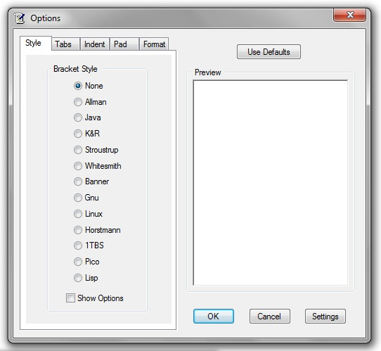
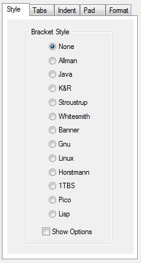
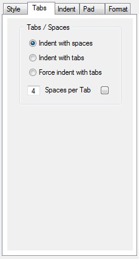
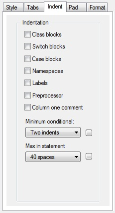
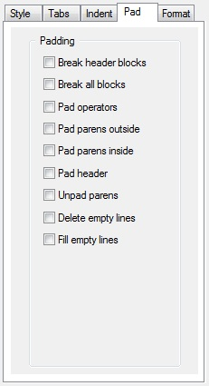
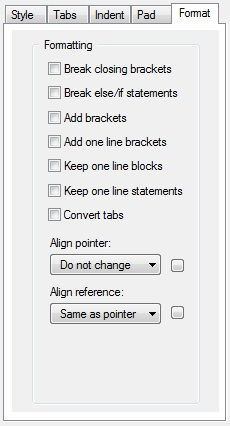

Artistic Style for Windows
A Windows indenter and formatter
of C, C++, C# and Java source code
Options Reference

The Options Dialog contains options for the Artistic Style indenter and formatter. Each option in the tab control corresponds to an option in Artistic Style. Clicking on the option will display its effect in the edit control window.
Tab Control
There are four tabs on the tab control. Their purpose is explained in the following sections.
Preview Window
The preview window on the right is a Scintilla edit control that will show the effect of each option as the option
is clicked. Checking and unchecking the options will demonstrate the effect the option has on formatting.
Use Defaults
Restore all settings to their default values. No options will be sent to Artistic Style. Therefore the Artistic
Style default options will be used.
OK
Accept the currently selected settings.
Cancel
Cancel the currently selected settings and use the settings in effect before the dialog was displayed.
Settings
Display the Artistic Style Options that are currently selected. The long option is displayed followed by the short
option. You can also call this display from the Tools menu or by using an accelerator key.
The Style tab controls the predefined style options used by Artistic Style.
The style options always override any individual option settings. You will always get the requested style regardless of other defined options.
None
If this option is used a predefined style option is not requested.
Allman
Allman style formatting/indenting uses broken brackets. It is sometimes referred to as BSD or ANSI style. Sets
the Artistic Style option style=allman.
Java
Java style formatting/indenting uses attached brackets. Sets the Artistic Style option style=java.
K&R
Kernighan & Ritchie style formatting/indenting uses linux brackets. Brackets are broken from namespaces, classes,
and function definitions. Brackets are attached to statements within a function. Sets the Artistic Style option
style=k&r.
Stroustrup
Stroustrup style formatting/Stroustrup style formatting/indenting uses stroustrup brackets. Brackets are broken
from function definitions only. Brackets are attached to namespaces, classes, and statements within a function.
Indentation is 5 spaces. Sets the Artistic Style option style=stroustrup.
Whitesmith
Whitesmith style formatting/indenting uses broken, indented brackets. Class blocks and switch blocks are indented
to prevent a 'hanging indent' with switch statements and C++ class modifiers (public, private, protected). Sets
the Artistic Style option style=whitesmith.
Banner
Banner style formatting/indenting uses attached, indented brackets. Class blocks and switch blocks are indented
to prevent a 'hanging indent' with switch statements and C++ class modifiers (public, private, protected). Sets
the Artistic Style option style=banner.
Gnu
GNU style formatting/indenting uses broken brackets and indented blocks. Indentation is 2 spaces. Extra indentation
is added to blocks within a function. The opening bracket for namespaces, classes, and functions is not indented.
Sets the Artistic Style option style=gnu.
Linux
Linux style formatting/indenting uses linux style brackets. Brackets are broken from namespace, class, and function
definitions. Brackets are attached to statements within a function. Indentation is 8 spaces. Also known as Kernel
Normal Form style, this is the style used in the Linux kernel. Sets the Artistic Style option
style=linux.
Horstmann
Horstmann style formatting/indenting uses horstmann style brackets. Brackets are broken with run-in statements.
Switches are indented. Indentation is 3 spaces. Sets the Artistic Style option style=horstmann.
1TBS
"One True Brace Style" formatting/indenting uses linux style brackets and adds brackets to unbracketed one line
conditional statements. Sets the Artistic Style option style=1tbs.
Pico
Pico formatting/indenting uses run-in style brackets. The closing bracket is attached to the last line in the
block. Switches are indented to allow a run-in to the opening switch block. The style impiles keep-one-line-blocks
and keep-one-line-statements. Sets the Artistic Style option style=pico.
Lisp
Lisp formatting/indenting uses attached brackets. The closing bracket is attached to the last line in the
block. The style impiles keep-one-line-statements but NOT keep-one-line-blocks. Sets the Artistic Style option style=lisp.
Show Options
This will change the display of the edit control to show the options set by the style.
If individual options are set that conflict with the displayed style settings, the style settings will be used.
This tab contains two groups, The Tabs/Spaces options and the Brackets options. The radio buttons in each group are for options that are mutually exclusive, only one of the selections is allowed.
The Tabs/Spaces options control the indentation character and the number of spaces per tab.
Indent with spaces
Indent using spaces. Sets the Artistic Style option indent=spaces=#, where # will
be the value in "Spaces per tab". If "Spaces per tab" is 4, it is the default setting and no Artistic Style option
will be generated.
Indent with tabs
Indent using tabs. Sets the Artistic Style option indent=tab=#, where # will be the
value in "Spaces per tab". If "Spaces per tab" is 4, it is the default setting and indent=tab will be used instead.
Force indent with tabs
Indent using tabs. It will use tabs as indents in areas where indent=tab prefers to use spaces, such as inside
multi-line statements. Sets the Artistic Style option indent=force‑tab=#, where
# will be the value in "Spaces per tab".
Spaces per Tab
This is a text box for entering the number of spaces per tab. This value will be used with the above options.
The entry will be edited for a valid range. The default setting for this option is 4 spaces
per tab. The button to the right of the text controls the option display. Click this button to change
the display on the right side of the dialog.
The Indent tab controls the indentation options used by Artistic Style.
Class blocks
Indent class blocks so that the headers public, protected, and private are indented in the
block. Sets the Artistic Style option indent‑classes.
Switch blocks
Indent switch blocks so that the case headers are indented within the switch block. Sets the Artistic Style option
indent‑switches.
Case blocks
Indent case blocks from the case headers. Case statements not enclosed in blocks are NOT indented. Sets the Artistic
Style option indent‑cases.
Namespaces
Add extra indentation to namespaces. Sets the Artistic Style option indent‑namespaces.
Labels
Add extra indentation to labels so they appear one indent more than the current indentation, rather than being
flushed to the left (the default). Sets the Artistic Style option indent‑labels.
Preprocessor
Indent multi-line preprocessor definitions ending with a backslash. Should be used with convert‑tabs for
proper results. Without this option the preprocessor statements remain unchanged. Sets the Artistic Style option
indent‑preprocessor.
Column One Comment
Indent C++ comments beginning in column one. By default C++ comments beginning in column one are not indented.
This option will allow the comments to be indented with the code. Sets the Artistic Style option
indent‑col1‑comments.
Minimum conditional
Set the minimum indent that is added when a header is built of multiple lines. This indent helps to easily separate
the header from the command statements that follow. This is a list box for selecting the minimum number of spaces.
The default setting for this option is two indents. Other choices are "zero indents",
"one indent", and "one-half indent". The button to the right of the text controls the option display. Click this
button to change the display on the right side of the dialog. Sets the Artistic Style option
min‑conditional‑indent=# where # will be the value in "Minimum conditional".
Max in Statement
Indent a maximum number spaces in a continuous statement, relative to the previous line. This is a list box for
selecting the maximum number of spaces. The minimum is 40 spaces. The selections
are in increments of 10 spaces. The button to the right of the text controls the option display. Click this button
to change the display on the right side of the dialog. Sets the Artistic Style option max‑instatement‑indent=#,
where # will be the value in "Max in statement".
 The Pad tab controls the padding options used by Artistic Style.
Break header blocks
Pad empty lines around header blocks (e.g. if, while ...). Sets the Artistic Style option break‑blocks.
Break all blocks
Pad empty lines around header blocks (e.g. if, while ...). Treat closing header blocks (e.g. else, catch ...)
as stand-alone blocks. Sets the Artistic Style option break‑blocks=all.
Pad operators
Insert space padding around operators. Sets the Artistic Style option pad‑oper.
Pad parens outside
Insert space padding on the outside of parenthesis. This can be used with unpad parens to remove unwanted spaces.
Sets the Artistic Style option pad‑paren‑out.
Pad parens inside
Insert space padding on the inside of parenthesis. This can be used with unpad parens to remove unwanted spaces.
Sets the Artistic Style option pad‑paren‑in.
Pad Header
Insert space padding after paren headers only (e.g. 'if', 'for', 'while'...). Any end of line comments will remain
in the original column, if possible. This can be used with unpad parens to remove unwanted spaces. Sets the Artistic
Style option pad‑header.
Unpad parens
Remove space padding around parenthesis on the inside and outside. It can be used in combination with the above
paren padding options. Only padding that has not been requested by the padding options will be removed. Sets the
Artistic Style option unpad‑paren.
Delete empty lines
Delete empty lines within a function. Sets the Artistic Style option delete‑empty‑lines.
Fill empty lines
Fill empty lines with the white space of the previous line. Sets the Artistic Style option fill‑empty‑lines.
 The Format tab controls the formatting options used by Artistic Style.
Break closing brackets
When used with either brackets=attach or brackets=linux, breaks closing headers (e.g. else, catch ...) from their
immediately preceding closing brackets. It has no effect for other bracket settings. Sets the Artistic Style option
break‑closing‑brackets.
Break else/if statements
Break "else if ()" header combinations into separate lines. Sets the Artistic Style option break‑elseifs.
Add Brackets
Add brackets to unbracketed one line conditional statements (e.g. 'if', 'for', 'while'...). The statement must
be on a single line. The brackets will be added according to the currently requested predefined style or bracket
type. If no style or bracket type is requested the brackets will be attached. Sets the Artistic Style option add‑brackets.
Add One Line Brackets
Add one line brackets to unbracketed one line conditional statements (e.g. 'if', 'for', 'while'...). The statement
must be on a single line. The option implies --keep-one-line-blocks and will not break the one line blocks. Sets
the Artistic Style option add‑one‑line‑brackets.
Keep one line blocks
Don't break one-line blocks. Sets the Artistic Style option keep‑one‑line‑blocks.
Keep one line statements
Don't break multiple statements residing on a single line. Sets the Artistic Style option keep‑one‑line‑statements.
Convert tabs
Converts tabs into spaces in the non-indentation part of the line. The number of spaces inserted will maintain
the spacing of the tab. The current setting for spaces per tab is used. It may not produce the expected results
if convert-tabs is used when changing spaces per tab. Tabs are not replaced in quotes. Sets the Artistic Style
option convert‑tabs.
Align pointer
Indicates how to align a pointer or reference operator (* or &). Options are "Do not change", "Attach
to type" (left), "Align in middle" (place between the type and name), and "Attach to name"
(right). This option is effective for C/C++ files only. Sets the Artistic Style option align‑pointer.
Align reference
Allows a reference operator (&) to be aligned different from a pointer. Options are "Same as pointer", "Do not change", "Attach
to type" (left), "Align in middle" (place between the type and name), and "Attach to name"
(right). This option is effective for C/C++ files only. Sets the Artistic Style option align‑reference.